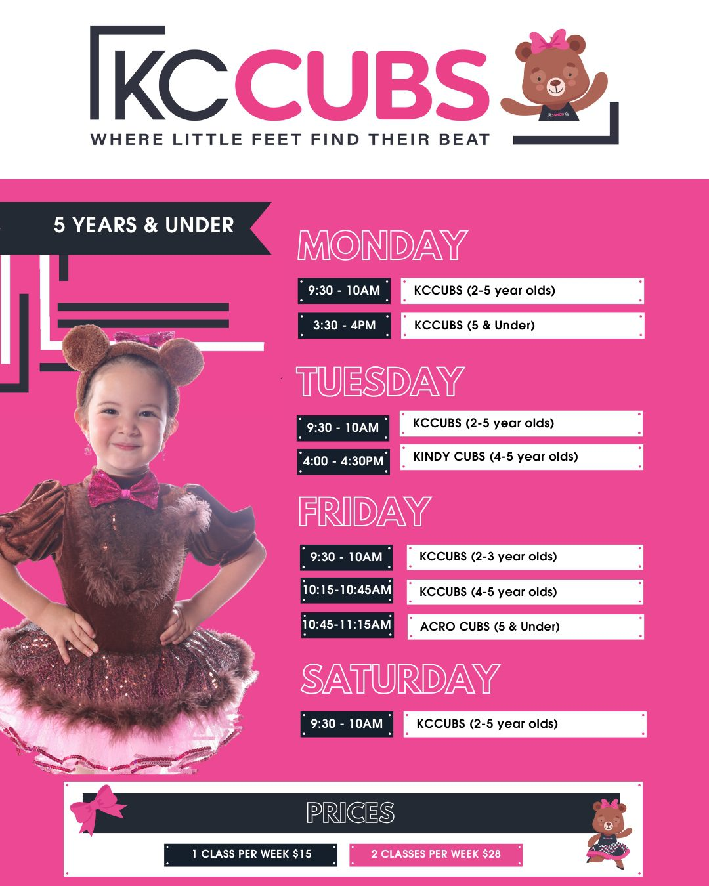

Principal and founder
Kasey
Leads KCDanceHQ with positivity, professionalism, inclusivity and heart.

KCDanceHQ can lead with its strongest combination: experienced teachers, a beautiful new studio and a recreational culture where students feel safe to try, supported to grow and proud to belong.
"At KC, it is never just about learning the steps."
This line from the current teacher content is the emotional centre. The redesigned version should make it visible early, then back it up with proof: qualified teachers, thoughtful class options and the new facility.
This concept positions KCDanceHQ as a studio where high standards and kindness sit together. It is serious about teaching, but not built around competition pressure.
The teacher grid stays polished and correctly labelled, with copy that points to warmth, qualifications and student care rather than competition credentials.
Leads KCDanceHQ with positivity, professionalism, inclusivity and heart.

Known for calm, caring guidance and long-standing connection to the KC community.

Brings technical care, structure and warmth to classical training.

Supports expressive dancers with kindness, patience and creative energy.
The value is not less ambition. It is a healthier pathway where students learn well, stay connected and enjoy dance for the long term.
Classes are structured so dancers can build confidence without feeling judged.
Professional teachers guide posture, musicality, coordination and performance skills.
Friendships, routine and familiar teachers keep the weekly experience positive.
The live site already has video proof. This version uses it to show the actual environment, then supports the feeling with clear teacher and class content.
Watch on YouTube
KCCubs appears as a dedicated entry point for little dancers, while the page keeps the full KCDanceHQ school as the primary brand story.


This call to action keeps the tone aligned with the studio: friendly, clear and reassuring.